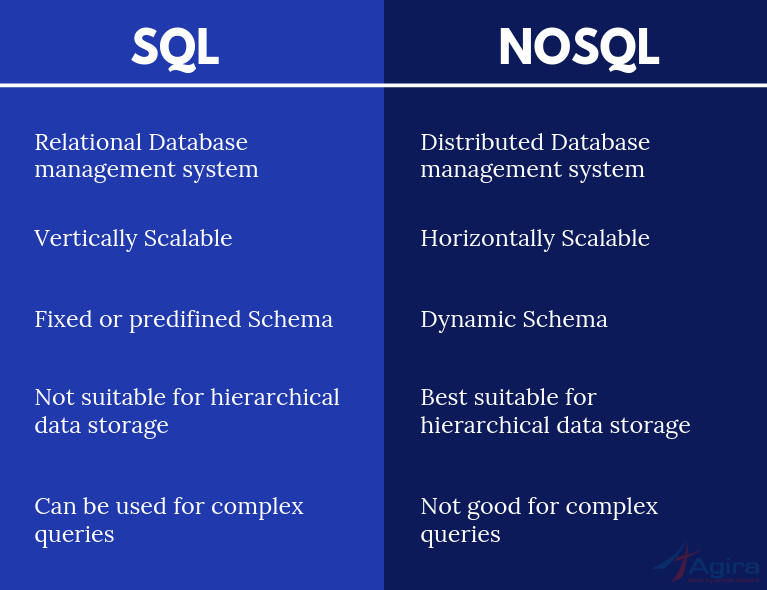

General Pointers
You have to ensure that you have access to port 27017 through your firewall. You can check by clicking HERE
MongoDB is a cross-platform document-oriented database program. Classified as a NoSQL database program, MongoDB uses JSON-like documents with optional schemas
The major difference between MongoDB and SQL Databases is the way they handle data. In SQL databases, data is stored in form of traditional 2 dimensional row-column structure while in MongoDB rich data document model is followed, which allows storage of any type of data.

A document is a record
A list of compass query operators
MongoDB Exam
- The Labs/Homework and Final Exam will go towards the final grade. A score of 65% and over will get you a certification of your achievement
Setup
Guide to setup Mongo DB on Mac
Tools Overview
- MongoDB Compass is the GUI for MongoDB. Compass allows you to analyze and understand the contents of your data without formal knowledge of MongoDB query syntax.

- MongoDB Atlas is the global cloud database service for modern applications. Deploy fully managed MongoDB across AWS, Azure, or GCP. Best-in-class automation and proven practices guarantee availability, scalability, and compliance with the most demanding data security and privacy standards.

- The mongo shell is an interactive JavaScript interface to MongoDB. You can use the mongo shell to query and update data as well as perform administrative operations.

Installation
Atlas
MongoDB Atlas is a fully-managed cloud database developed by the same people that build MongoDB. Atlas handles all the complexity of deploying, managing, and healing your deployments on the cloud service provider of your choice (AWS, Azure, and GCP).

- Atlas users can deploy clusters which are groups of servers that store your data. The servers are configured in a replica set. Each server in the cluster stores the same data

- Example of a data record being replicated to all servers in the cluster

- Replication ensures that your data is not lost if a server goes down of is attacked.
- The cluster of servers that hold the Mongo DBs are hosted in the cloud from companies like AWS and so on


- Tutorial for navigation of Mongo DB Atlas
Mongo DB Realm
MongoDB Realm is a serverless platform and mobile database. MongoDB Stitch and Realm Database are now part of MongoDB Realm.
Connecting to DB
You have a few options to connect to a Mongo DB a few are listed below
- Mongo DB Compass On this option ensure to add your public IP address to the DB in Atlas

For this connection you will need to get the the connection string and insert the password were specified.
- Mongo DB Shell is another way you can interact with the Mongo DB. The mongo shell is an interactive JavaScript interface to MongoDB. You can use the mongo shell to query and update data as well as perform administrative operations.
Mongo DB shell is downloaded as part of the Mongo DB installation and can be accessed through command propmt.
You are connected to a primary when making a shell connection. The primary is the only member in the replica set that receives write operations. MongoDB applies write operations on the primary and then records the operations on the primary’s oplog. Secondary members replicate this log and apply the operations to their data sets.
When connecting to an Atlas cluster using the shell, why do we provide the hostnames for all nodes when we launch mongo?
So that if the primary node goes down, the shell can connect to other nodes in the cluster instead.
Introduction
Understanding JSON
Please review the JSON spec for more detail on the data types directly supported in JSON.
- You will have to understand JSON when working with Mongo DB
- To learn more about JSON see here the JSON learning page
- An example of a JSON document is as below

- JSON is widely used as its easy for computers to parse and humans to understand
- JSON doucments are created of keys and values

- All keys must be surrounded in double quotes
- To separate a key and value is to use a :
- A field is a kay and value pair and are sperated by using a comma
- Below are the supported value types in JSON

- White space outside quotes is not part of the JSON document.
- Arrays and Objects themselves can be values in JSON
- JSON documents support any level of hierarchy that is appropriate to your applications data model.
- To use the compass filter to display only documents you would like. This is done by using a JSON key and value.
- Date is not directly supported in JSON as a data type
Databases, Collections and Documents

- A database serves as a name space for a collection
- Collections store indivual records that are called documents.
- A document is a structure composed of file and value pairs, similar to JSON objects or other mapping data types. Fields in documents can hold rich data: other documents, arrays of values or documents. These properties make documents well suited to storing data from applications that use rich objects themselves for data storage. Consider the following document:

- A field is

Exploring Datasets in Compass

- Each Dataset will have one or more collections and when you click on the collection you will see multiple documents

- You will have the schema tab in compass which will give you each record used in each document and the format of that record.

MongoDB Documents: Scalar Value Types
Mongo DB Documents: Fields with Documents as values
- The nested of a document within a document is supported
The field air tempreture is the format document as it has two fields, one a string called quality and another which is value which is a number embedded. 
- You can have fields that are documents which have nested documents further down.

Mongo DB Documents: Fields with Arrays as Values
- Array values for fields are also supported
- Unlike relational database models, MongoDB documents can have fields which have values as arrays. The prototypical example in almost all MongoDB documentation is a document having a tags field, whose value is an array of strings, such as ["NoSQL", "Ruby", "MongoDB"]. If you’re coming from a relational world (which most of us are) then this feature, at first glance, is a bit intimidating.

- As mongo DB has a flexible data model all documents dont have to contain the same fields
MongoDB Documents: Geospatial Data
MongoDB Compass uses a 3rd party plugin for the geographical visualization of geospatial fields in your documents.
- Q - Which of the following are types of data Compass (and MongoDB) recognizes and specifically supports?
A - Documents, Arrays and Geospatial Data
Filtering Collections with Queries
An example of a filter in compass
- Mongo DB Compass provides a easy to use interface to run quries

- An example of a filter would be as below:
- The query is sent to the collection and the relevaqnt documents are presented.
- If you click on the graph element you will see extra functionality in compass. You will see the filter has been updated what the point of the graph you have clicked. You than press apply to the filter and the relevant documents will be displayed.

- You have different types of filters, a common being a equality filter. Presenting documents that are equal to the query specified
- The below example dispalys the graphs showing were each bar is equal to 5 years. So the query created is shows the birth years that are greater than 1985 and less than 1990.

- The gte and lt are called operators in Mongo DB.
- In compass you car actually click and hold multiple bars in a graph in the schema tan. This builds a custom query

- You will find some operators have a e at the end, this states equal to

The MongoDB Query Lanuage + Atlas
Introduction to CRUD
CRUD operations create, read, update, and delete documents.
- This is used to get Data in and Out of Mongo DB
- The Mongo Shell will be used in this chapter
Creating and Connecting a Sandbox in Mongo
- Connection String Example. /Sandbox is the name of the cluster and the username and password will have to be changed

- Create a new cluster - VIDEO Tutorial
Loading Data into Your Sandbox Cluster
- Start of by connecting the shell (Command Propmt) to the cluster
- the command show dbs returns a list of databases
- To quit the shell connection to your cluster use quit()
- To load data into a database you enter the directory of were the file is of the data in command propmt. Than run the connection script to connect to Mongo DB. Finally use load("FILENAME.INCEXTENTION") and this will import your data into the cluster.

- If you want to select the new database simply use use DATABASENAME. To get the name you can do show dbs and this shows all the databases
- If you want to see what is in the data base you can use show collections
- If you want to see documents in the collection you simply do db.COLLECTION.find().pretty()

Connecting to Your Sandbox Cluster from Compass
- Download Compass and than get your connection string to connect to your database

- You will be presented with the option to download compass which you can do from here. We already have it installed. You will have to edit the connection string in replace password with your password you setup.

- Next open up compass and connection using your newly modified string. Paste the string in first than click favorites, name the connection and pick a colour.

Creating Documents: insertOne()
- Create operation in Mongo DB are insert documents.
- To create a collection in compass you simply click on teh database and click create collection

- Once you have created the collection you can add documents by selecting the collection and clicking add. Than click insert document and than click the correct view.


- As you are inserting the data ensure to apply the corect value type to each record.

- You can edit a document by clicking the edit pen.
- You can do the above using Mongo DB shell. and the method we will be using will be .insertOne. To use this we have to first specifiy which database to use.
- To check what database you are currently using you can type db
- Ensure you are in the correct database before inserting
- ENSURE TO GET THE COLLECTION NAME RIGHT OTHERWISE A NEW COLLECTION WILL BE CREATED
An exmaple of using shell to insert one document would be db.MoviesScratch.insertOne({title: "Star Trek II: The Wrath Of Khan", year: 1982, imdb: "tt0084726"})
- You get back two bits of information one confirming it has been imported through and acknowledgement and second a ID has been created for the document.
- If the collection we specified was not already created the above insert would create both the collection and the document.
- If you dont provide a id one will be generated. An example of a id db.MoviesScratch.insertOne({_id: "tt0084726", title: "Star Trek II: The Wrath Of Khan", year: 1982, imdb: "tt0084726"})